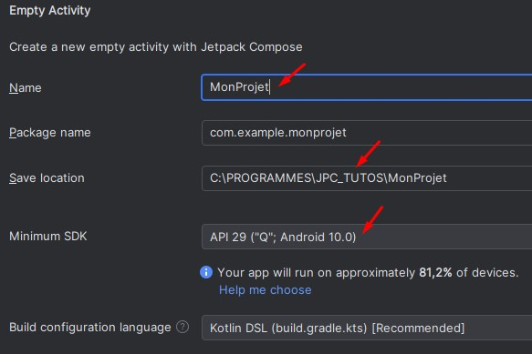
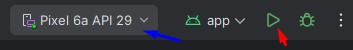

Jetpack Compose pour Débutant
Introduction
Jetpack Compose est une boîte à outils moderne conçue pour créer des applications Android en utilisant le langage de programmation Kotlin. Contrairement aux approches précédentes, où l'interface utilisateur était définie en XML et le code de logique en Java, Jetpack Compose centralise tout le processus dans Kotlin, simplifiant ainsi le développement.
Avec Jetpack Compose, les interfaces utilisateur sont construites en utilisant des fonctions composables, qui sont des blocs de code réutilisables permettant de créer des éléments d'interface tels que des boutons, des champs de saisie, des cases à cocher, et bien plus encore. Ces fonctions composables rendent le code plus lisible et modulaire, facilitant la gestion et la mise à jour de l'UI.
Une caractéristique clé de Jetpack Compose est la gestion de l'état et la recomposition automatique. Les éléments de l'interface sont automatiquement redessinés en réponse aux changements d'état grâce à une gestion efficace des variables d'état. En Kotlin, les variables de type mutableState permettent de suivre les changements dans l'état de l'application. Lorsqu'une variable de ce type est modifiée, les composables qui dépendent de cette variable sont automatiquement rafraîchis pour refléter les mises à jour. Cela simplifie la création d'interfaces dynamiques et réactives, tout en réduisant le besoin de gestion manuelle du cycle de vie de l'interface utilisateur
Jetpack Compose offre également une intégration fluide avec les autres composants de l'écosystème Android, ainsi que des outils puissants pour personnaliser et optimiser les performances de l'interface utilisateur, ce qui en fait un choix attrayant pour les développeurs Android cherchant à créer des expériences utilisateur modernes et performantes.
Notions de base
Nous allons examiner un bout de code minimaliste qui va nous permettre de prendre contact avec les composables, les variables de type mutableState et la notion de recomposition
var taillexy by remember { mutableStateOf(20) }
Column {
Box( modifier = Modifier
.size(taillexy.dp, taillexy.dp)
.background(Color.Magenta)
)
Button( onClick = { taillexy += 10 } )
{
Text(text = "Agrandir")
}
}Cce bout de code est constitué d'une variable et de trois composables:
- var taillexy by remember { mutableStateOf(20)} C'est la déclaration de la variable taillexy. C'est une syntaxe un peu particulière. Pour l'instant nous allons nous focaliser sur les ponts suivants:
- by : Cet opérateur est utilisé pour déléguer une valeur à une variable. Pour l'instant, considérez-le comme une manière différente de faire une affectation '='. Ici, la variable taillexy est initialisée à 20.
- remember : Cet opérateur indique que la variable conserve sa valeur même si le code est réexécuté. Contrairement à une variable ordinaire, elle ne revient pas à 20, même après une recomposition. C'est un peu similaire au mot clé static en langage C/C++
- mutableStateOf signifie que cette variable est liée à un état de l'interface utilisateur l'UI. Si sa valeur change, l'UI sera recomposée automatiquement pour refléter le nouvel état
- Column( paramètres ) { contenu } Column est composable de type conteneur. Les composables fils qui seront placé dedans sont répartis verticalement l'un en dessous de l'autre.
- Entre ( ), on place les propriétés comme la taille, la couleur, la façon dont les fils
seront
répartis et alignés etc...
Dans, l'exemple, on a omis les (), la colonne prendra les paramètres par défaut - Ente { }, on place les fils de la colonne. Dans l'exemple, on a placé deux composables, un Box et un Button
- Box( paramètres ) { contenu } Box est un conteneur de type 'Boite rectangulaire'. Ici on ne va rien mettre dedans d'où l'absence des {}
- Modifier.size(taillexy.dp, taillexy.dp) définit la largeur et la hauteur du Box. Ici on utilise notre variable taillexy. Au démarrage de l'application le Box aura une taille de 20.dp x 20.dp ( l'unité dp correspond à la densité de pixel)
- Modifier.background(Color.Magenta) Couleur du Box
- Button( paramètres ) { contenu } C'est un simple bouton. Il a un seul paramètre et il contient le texte "Agrandir", tout le reste est par défaut
Il utilise un seul paramètre : modifier
Le paramètre modifier peut prendre plusieurs options. Ici il en a deux :
Le paramètre onClick définit ce qui se passe quand on clique sur le bouton. A chaque clic, la fonction lambda { taillexy += 10 } est exécutée. Cette fonction ajoute 10 à la variable taillexy.
Comme c'est une variable d'état, le système détecte son changement et déclenche la recomposition de l'UI. Il en résulte que le composable Box est redessiné avec ses nouvelles dimensions
Voici le code entier. Si vous voulez l'essayer, créer un nouveau projet. Replacer le contenu de votre MainActivity par le code ci-dessous. Dans la première ligne, remplacez composebasics par le nom de votre projet (minuscule)
package com.example.composebasics
import android.os.Bundle
import androidx.activity.ComponentActivity
import androidx.activity.compose.setContent
import androidx.compose.foundation.background
import androidx.compose.foundation.layout.Box
import androidx.compose.foundation.layout.Column
import androidx.compose.foundation.layout.size
import androidx.compose.material3.Button
import androidx.compose.material3.Text
import androidx.compose.runtime.getValue
import androidx.compose.runtime.mutableIntStateOf
import androidx.compose.runtime.remember
import androidx.compose.runtime.setValue
import androidx.compose.ui.Modifier
import androidx.compose.ui.graphics.Color
import androidx.compose.ui.unit.dp
class MainActivity : ComponentActivity() {
override fun onCreate(savedInstanceState: Bundle?) {
super.onCreate(savedInstanceState)
setContent {
var boxsize by remember { mutableIntStateOf(20) }
Column {
Box( modifier = Modifier
.size(boxsize.dp, boxsize.dp)
.background(Color.Magenta)
)
Button( onClick = { boxsize += 10 } )
{
Text(text = "Agrandir")
}
}
}
}
}
Android Studio
Android Studio est l'environnement de développement intégré (IDE) officiel pour le développement d'applications Android. Basé sur IntelliJ IDEA, il offre une suite complète d'outils pour écrire, tester, déboguer et optimiser des applications Android. Il inclut un éditeur de code performant, un émulateur intégré de téléphones et tablettes android (et bien plus encore).
Android Studio est un gros pavé, il faut une bonne liaison Internet pour l'installer et un bon PC pour le faire tourner correctement.
Créer un projet Android Studio
On trouve sur Internet plein de vidéos pour vous aider à commencer avec Android Studio
Pour commencer un nouveau projet:
- New Project → On obtient une fenêtre pour sélectionner le type de projet
- Choisir Empty Activity Jetpack Compose
- On obtient la fenêtre ci-dessous 
- Donner un nom à votre projet
- Vérifier que l'emplacement où il sera stocké vous convient
- Choisir la version Android minimale pour faire tourner votre application
- Terminer par le bouton Finish
- Si vous avez ce pop-up, pas de panique, l'IDE vous indique que Microsoft Defender est actif et il va ralentir le travail sur le projet. Cliquez sur Automatically pour exclure ce projet de Microsoft Defender
- Android Studio ne démarre pas un projet réellement vide mais crée un exemple dy type "Hello World!". L'IDE affiche dans la barre d'état les opérations qu'il est en train d'effectuer sur le projet. Quand tout est terminé, vous pouvez le voir en haut à droite de l'écran
Maintenant, on peut commencer à toucher à notre projet et le tester
Tester le projet
On a 3 façons pour tester et débeuguer un projet
- Sur un vrai téléphone: C'est la méthode qui marche bien, Pour y arriver il faut effectuer
les étapes ci-dessous:
-
Activer le mode développeur sur votre téléphone :
Allez dans les Paramètres → À propos du téléphone → cliquez 7 fois fois sur Numéro de build - Activer le débogage USB :
Dans les paramètres, chercher Options développeur et activez Débogage USB. - Connecter le téléphone via USB à votre ordinateur
Acceptez la demande de débogage USB sur votre téléphone. - Votre téléphone apparaît dans la barre d'outils Android Studio, Cliquez sur le bouton
play ▶,
L'étape "Gradle buid running" peut durer assez longtemps, ne soyez pas trop pressé - Maintenant, vous pouvez modifier votre appli et cliquer sur le bouton Run app, l'actualisation est plus rapide
-
Activer le mode développeur sur votre téléphone :
- Sur un Émulateur: Cette méthode est très gourmande en ressource processeur, elle
nécessite un très bon PC
- Cliquer sur Devices manager à droite de l'écran
- Cliquer sur "+" → Create virtual device
- Vous allez avoir plusieurs choix. Sur mon vieux PC (I5), le Pixel 6a avec l'OS Android 10 (API 29) marche assez bien
- Maintenant démarrer votre téléphone virtuel
- Attendez que votre que votre Virtual Device soit démarré. La première fois ça peut prendre pas mal de temps. Si pour une raison ou une autre, l'émulateur se plante et que vous n'arrivez pas à l'arreter, allez dans le gestionnaire des taches et arreter le process adb
- Maintenant que l'émulateur est démarré, lancer votre application 
- Vous devez voir quelque chose de ce genre,
- Si vous voulez déplacer l'émulateur dans l'écran, il faut modifier le mode de visualisation. Mois je préfère le faire flotter par dessus le contenu de l'écran. Dans la barre d'outils de Running Devices, Cliquez sur les trois ponts → View Mode → Float
- Maintenant vous pouvez modifier votre appli et actualiser
Vous pouvez par exemple l'alléger et ne garder que ce que l'on maîtrise à notre niveau d'apprentissage.
package com.example.monprojet import android.os.Bundle import androidx.activity.ComponentActivity import androidx.activity.compose.setContent import androidx.compose.material3.Text import androidx.compose.runtime.Composable import androidx.compose.ui.unit.sp class MainActivity : ComponentActivity() { override fun onCreate(savedInstanceState: Bundle?) { super.onCreate(savedInstanceState) setContent { MonApp() } } } @Composable fun MonApp() { Text( text = "Hello World!", fontSize = 30.sp ) }
- Quand vous avez terminé, je vous conseille de:
- Fermer l'application
- Cacher le panneau Running Devices
- Arrêter l'émulateur
- Prévisualiser votre UI: C'est assez pratique mais il y a du bon et du moins bon. Cés à
vous de juger.
- Les modification du code sont mises à jour automatiquement dans la @preview (Live Edit)
- L'UI ne s'affiche pas exactement comme sur un téléphone
- Par défaut, on ne peut pas interagir avec l'application (cliquer sur des boutons etc ...)
- Pour la mettre en œuvre il faut ajouter un @preview dans lequel on place une
fonction composable qui affiche la totalité ou une partie de notre UI. On peut créer
plusieurs preview
package com.example.monprojet import android.os.Bundle import androidx.activity.ComponentActivity import androidx.activity.compose.setContent import androidx.compose.material3.Text import androidx.compose.runtime.Composable import androidx.compose.ui.tooling.preview.Preview import androidx.compose.ui.unit.sp class MainActivity : ComponentActivity() { override fun onCreate(savedInstanceState: Bundle?) { super.onCreate(savedInstanceState) setContent { MyApp() } } } @Composable fun MyApp() { Text( text = "Hello World!", fontSize = 30.sp ) } @Preview(showBackground = true) @Composable fun MyPreview() { MyApp() } - On a trois mode de visualisation: Code seul, code est Preview, Preview seule
- Consultez la documentation pour voir toutes les possibilités du mode @preview